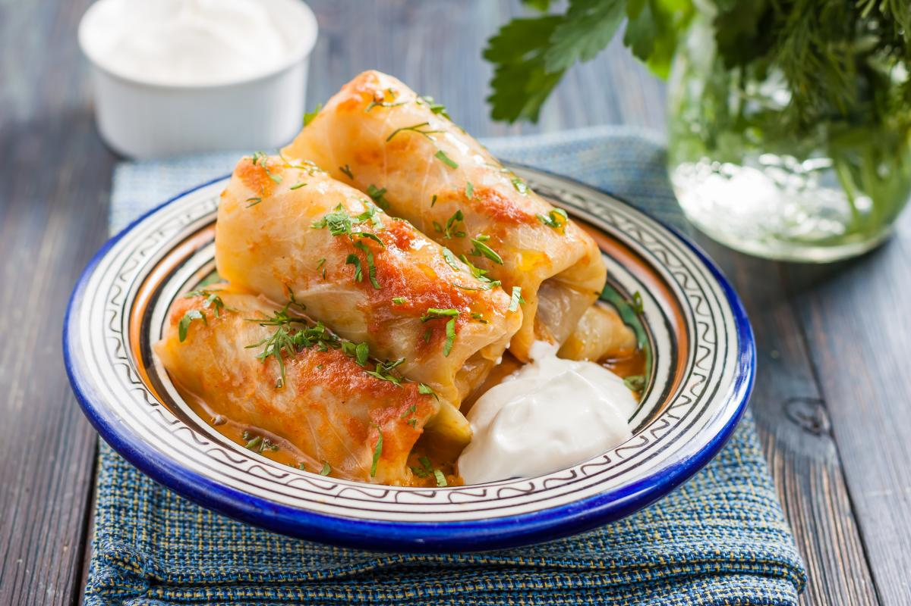
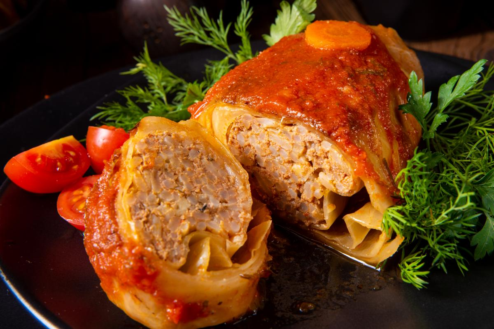

Інгредієнти
Капусту розібрати на листя, помістити в миску та посолити. Закип'ятити чайник, залити окропом листя, накрити кришкою і залишити на 15-20 хвилин. Рис добре промити й варити у великій кількості підсоленої води до напівготовності, 10-12 хвилин. Потім відкинути його на друшляк і промити холодною водою. Моркву очистити й натерти на великій тертці. Цибулю почистити, нарізати кубиками. Розігріти сковороду, налити рослинну олію. Обсмажити на середньому вогні цибулю та моркву, помішуючи, 1-2 хвилини.
 